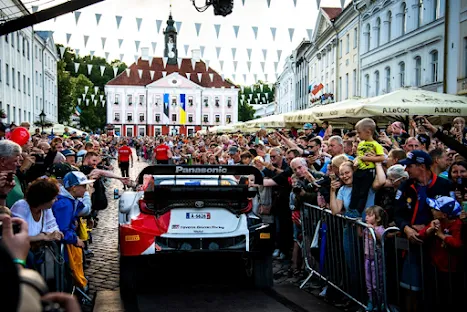
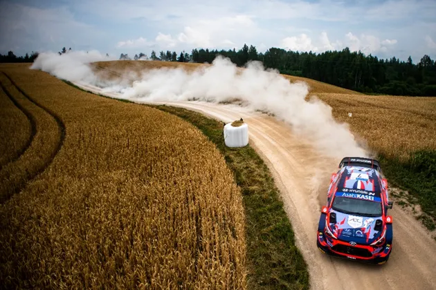
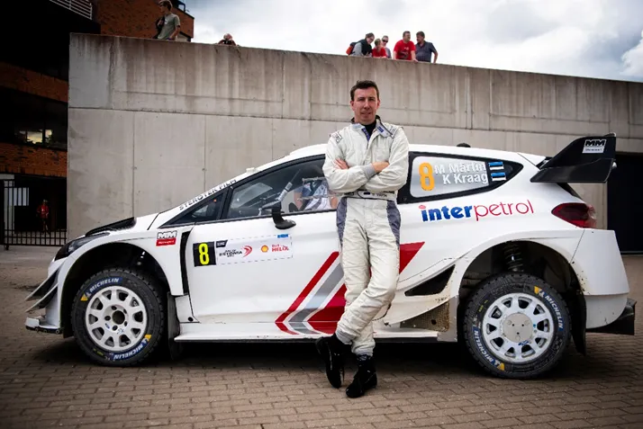
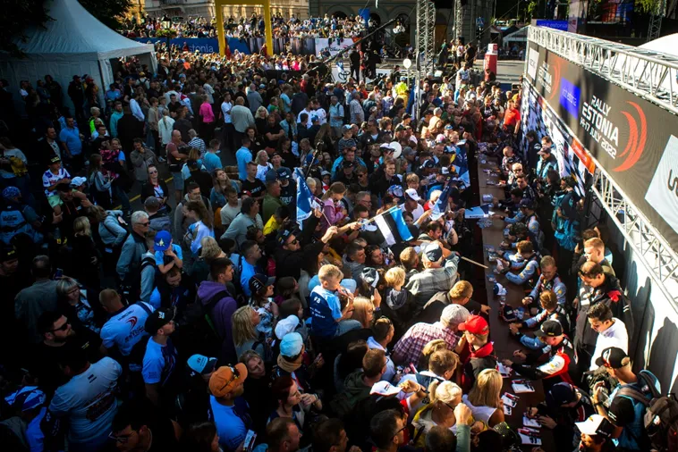

Why Rally Estonia's Absence from the 2024 Calendar Hurts Both the WRC and Estonian Motorsport
I have to admit, this post will come as a shock to people that know me, as I have been an outspoken critic of Rally Estonia, admittedly most of the time to annoy my Estonian colleagues. But when the news broke earlier this year that Rally Estonia will be replaced by Liepaja in 2024, I honestly felt sad. In my very naïve mind, Estonia would be replaced by a big classic or a fan favorite like New Zealand, Argentina or Ireland, and I dismissed Estonia as nothing more but a watered-down version of Finland. What I hadn’t realized is that the WRC is shifting its focus from its old “core” of rallies and transitioning with a new one for the 2020s.
And without a doubt for me, Rally Estonia has been an addition to the WRC calendar that ticks all the boxes of being an important event in the calendar. Ott Tanak’s rise into WRC superstardom has made rallying and motorsport in general one of the biggest sports in the country, if not the biggest. Tanak’s success on the stages has paved the way for a young generation of Estonians in motorsport, like Robert Virves, Gregor Jeets, Georg Linnamae and even circuit racers like Juri Vips and Paul Aron, and has inspired many more to follow their passion, with local rallies in Estonia flooded with entries with every car imaginable, even GAZ trucks! Estonia has built itself a fanbase many countries that hold events in the championship, or used to or aspire to host would absolutely kill for at the moment. A future rallying nation, like Finland is nowadays. So, I was really shocked to see it being dropped from the calendar for 2024. With the major reason for it being the Estonian organizers having their funding cut by the government.

Rally Estonia’s importance to the world of rallying should not be underestimated. For many years it served as the dress rehearsal to one of the biggest events in the WRC calendar, Rally Finland, with many drivers opting to participate in Rally Estonia as a test event for Finland, including WRC drivers. Mads Ostberg did the rally as preparation and won it twice, and Estonian fan favorite Thierry Neuville finished 2nd in 2012. In 2018, the event served as a sort of official event for everyone, with Toyota Citroen and Hyundai each sending one of their drivers in a WRC car to tackle the rally as a Pre Event Test before Finland. Unsurprisingly Tanak in the Toyota won the rally, a minute clear of Hayden Paddon in 2nd. For 2019 the event was held as a candidate event, with the prospect of joining the WRC calendar in 2020. Even more WRC cars were there, with all the teams sending one “correspondent” let’s say to the event, and M Sport also debuted the Fiesta Rally2 there with Teemu Suninen. The locals were also greeted with Markko Martin in a top car, as the Estonian legend did his final rally, and was competitive in it too.

To the disappointment of many, Estonia wasn’t featured in the 2020 calendar. But the world would be turned on its head due to the Covid-19 pandemic. Ralllying was put on a hold for almost 6 months. Rally Estonia’s organizers were instrumental in bringing the WRC back and Rally Estonia was the first rally after the covid break, won by home hero Ott Tanak no less. Estonia had finally gotten its WRC round. And it was a very positive debut, with everyone in the service park delighted with everyone’s work and Hyundai team boss Andrea Adamo expressing his wish to see the rally as a regular fixture on the calendar. He got his wish, as Estonia featured in the 2021 2022 and 2023 calendar, with 2021’s version seeing Kalle Rovanpera becoming the youngest ever WRC winner.

And now what? With the rally all but confirmed to be off the calendar for 2024 what’s next for Estonia ?
A
return to the ERC ?
A rotation deal with Liepaja (because
these always work…) ?
A new location for the rally ?
Or perhaps something more radical like a surface change to snow ?
That, I do not know. But what I am certain of, is that this change, unless
rectified in 2025 will hurt both the WRC and Estonia in the long term. The WRC
is losing one of it’s more well attended rallies, a home rally of one of it’s
biggest stars and a rally that is liked by drivers and fans alike. And for what
replacement? A rally that for years has been criticized for being too fast and
too generic with with little to no jumps. For context, Rally Finland 2022
winner Ott Tanak had an average speed which was only 5km/h faster than Sesks in
2022, despite being in a Rally1 vs Sesks who was in a Rally2. And Estonia is
basically sabotaging its own progress in the motorsport world, shooting itself
in the foot with potentially killing off one of its biggest sporting events.
Only time will tell if Estonia will come back on the calendar in 2025 or 2026, but what is certain is that without a rally in the WRC (or at the bare minimum ERC), Estonia’s progress in rallying, will be severely hindered.


Comments